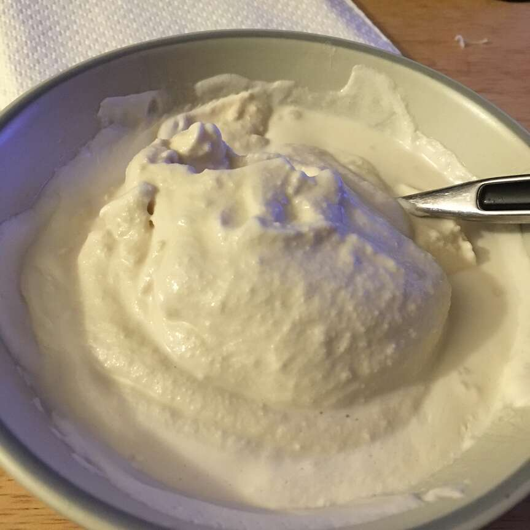

Gelato Recipe

Description
Italian-style coffee-flavored gelato. True gelato does not contain eggs and it will melt fairly quickly when removed from the cold. On the plus side, it's far lower in cholesterol than ice cream. It is recommended to eat when ready, but you can store for up to 3 days in an airtight container in the freezer.
Ingredients
- Whole Milk
- Sugar
- Coffee flavor
Steps
- Mix milk, cream, and sugar together in a large bowl. Refrigerate to let sugar dissolve.
- Brew the coffee grounds with water in a coffee maker or French press. Refrigerate coffee until completely cooled, at least 30 minutes.
- Beat milk mixture using an electric mixture until slightly thickened to the consistency of buttermilk. Stir coffee into milk mixture.